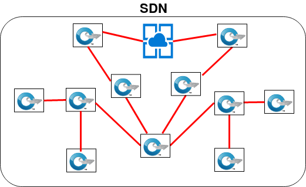
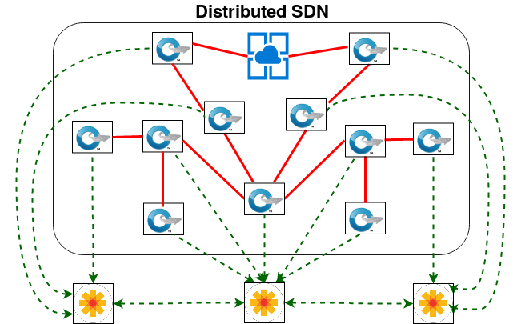

Traditional Internet-of-Things (IoT) relies on the cloud oriented services. Cloud oriented services increase operational expenditure (opex) and due to following reasons.
- Cloud lease time is one of the primary opex for IoT infrastructures
- The data forwarding cost is also increased for the client as the data requires to be sent to the cloud service provider.
- IoT traffics are short and bursty in nature. Therefore, it increases network management overhead.
- The infrastructure devices are failure prone which affects the network management policies
In-network processing can avoid some of the problems. In-network processing uses residual resouces of networking devices for data processing.
- It Can reduce cloud expenses significantly.
- Data forwarding cost and utilization of bottleneck links are reduced in acse of in-network processing.
- In-network processing can provide security as the data need not leave the network.
- It can provide higher response time in comparison to cloud infrastruce.
- However, network management overhead increases as the internal data processing units may migrate from time to time from one device to another device.
- Increase in failure probability also affects the total operation.
Architectural Progress
(Click on the images* for the animated image)
SDN
SDN helps in network mangement by creating centralized view.
d-SDN
Distributed SDN can achieve scalability by deploying multiple instances.
Aloe
Aloe uses μ-controller architecture to exploit in-networking infrastructure.